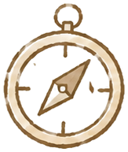
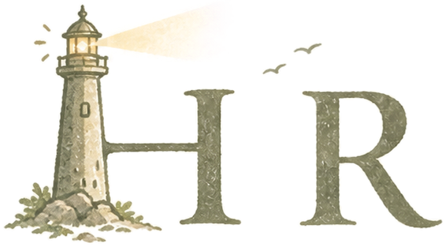
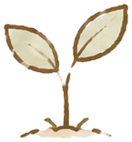
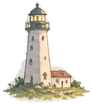
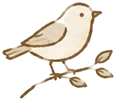
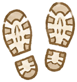
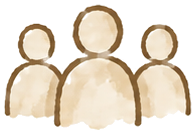
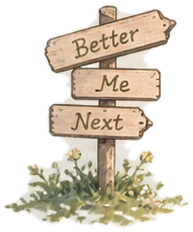
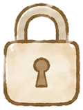
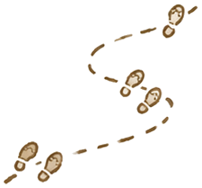

01 · 강점자기조절력
같은 질문이 몇 번이고 반복돼도 화내지 않고 답합니다.
- 상황
- K-뉴딜 SKT Aleph 심화 과정 조 활동 첫날, 동료의 추천으로 얼떨결에 조장을 맡았습니다.
- 행동
- 같은 질문을 몇 번이고 반복하는 동료들에게도 화내지 않고 최대한 친절하게 답했습니다.
- 결과
- 심화 과정 동안 한 번도 빠지지 않고 출석했고, 중간평가 우수자로 선정되었습니다.

수풀 너머, 나의 행로

My Journey지금까지 걸어온 길과, 앞으로 걸어갈 길을 담은
나의 포트폴리오입니다.
이 페이지는 채용 담당자와 함께 일할 동료에게, 제 강점 세 가지와 그 근거를 보여주는 소개 페이지입니다.

행로(行路)는 다니는 길 또는 길을 가다라는 뜻입니다. 한자로는 다닐 행(行) 자와 길 로(路) 자를 씁니다. 보통 사람이 걸어가는 실제 길을 뜻하거나, 비유적으로 인생의 여정을 뜻할 때 쓰입니다.
옆으로 넘겨 강점 세 가지를 볼 수 있어요 →


01 · 강점같은 질문이 몇 번이고 반복돼도 화내지 않고 답합니다.

02 · 강점원하던 결과가 아니어도 있는 그대로 받아들이고 끝까지 붙잡습니다.

03 · 강점도움이 필요한 순간엔 망설임보다 몸이 먼저 움직입니다.

My private journal

패스키로그인 상태 확인 중...
아직 계정이 없다면 아이디를 정해서 첫 패스키로 계정을 만들어보세요. 계정은 여러 개 만들 수 있고, 계정마다 비공개 영역이 서로 완전히 분리돼요.
이미 계정이 있고 이 기기를 추가로 등록(기기 분실 대비)하려면, 먼저 위에서 로그인한 뒤 다시 눌러주세요 — 버튼이 "내 계정에 새 기기 추가"로 바뀝니다.
로그인하면 내가 등록한 패스키 목록이 여기 보여요.

오늘의 기록로그인한 나만 볼 수 있는 영역이에요. 로그인 전에는 내용이 아예 내려오지 않고, 다른 계정으로 로그인하면 다른 계정의 메모가 보여요(서로 섞이지 않습니다).
불러오는 중...
아래에 적고 저장하면 위 목록에 새 메모로 추가돼요. 각 메모는 "수정"/"삭제" 버튼으로 직접 고치거나 지울 수 있어요.